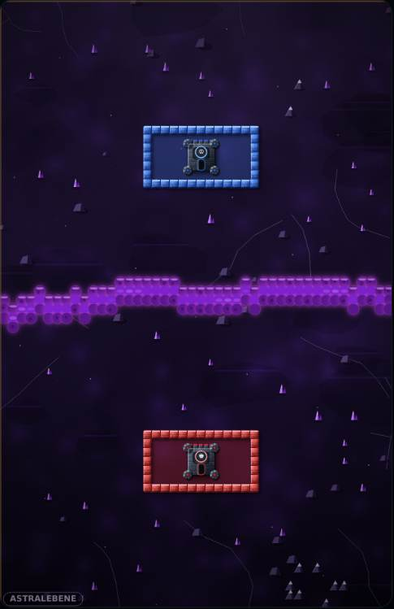
Stack
& Siege
One gap, and the castle falls.
A castle duel for iPhone and iPad. You build your wall from falling blocks, your opponent blasts it open again.
Join the beta Free via Apple's TestFlight. Open the link on your iPhone or iPad — you join inside the TestFlight app. On Android or a computer: play right now in the browser. Play now in the browser Works on iPhone, Android and any computer. The iOS beta is in review at Apple; the TestFlight button appears here once it opens.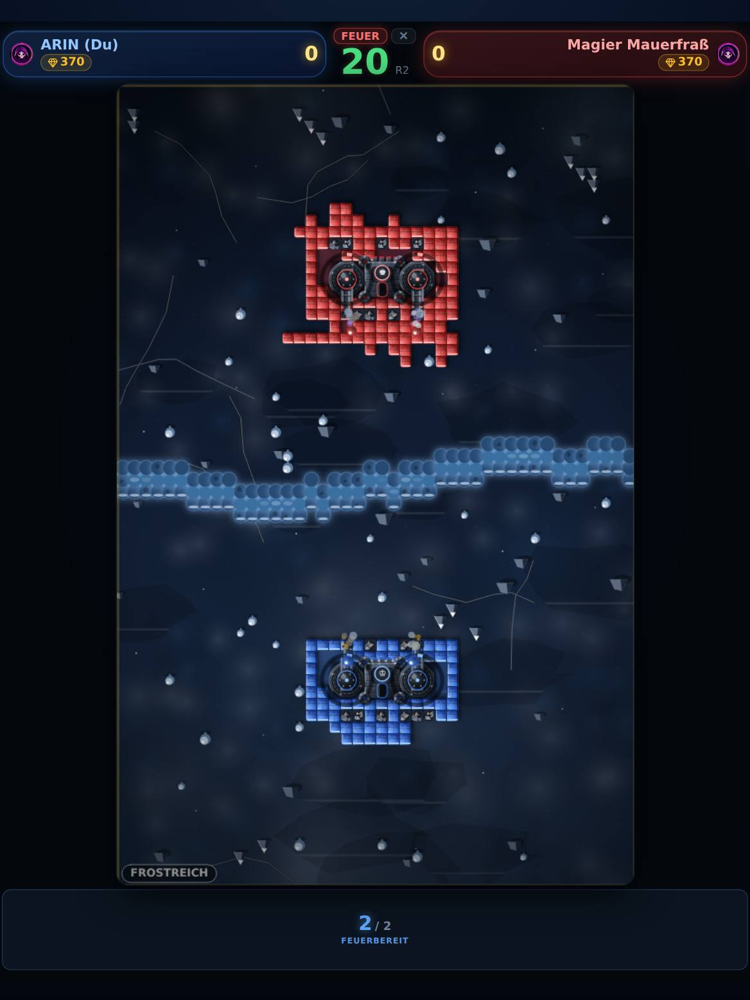
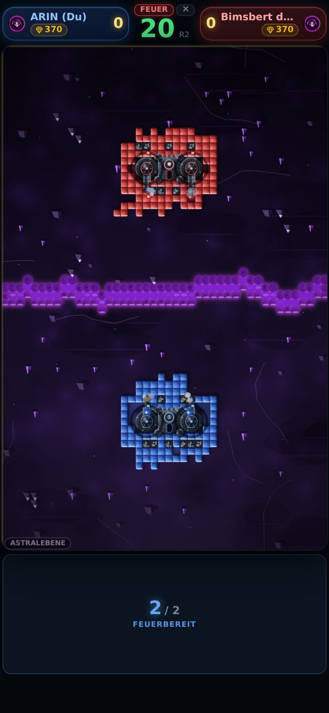
The rhythm
Build. Shoot. Arm up.
Set up once, then keep the beat: 25 seconds to build, 20 to shoot, 15 to arm up. You play at the same time — nobody waits for a turn.
Blocks drop to you, you rotate and place them. Close last round's hole first, then expand. In that order, not the other way round.
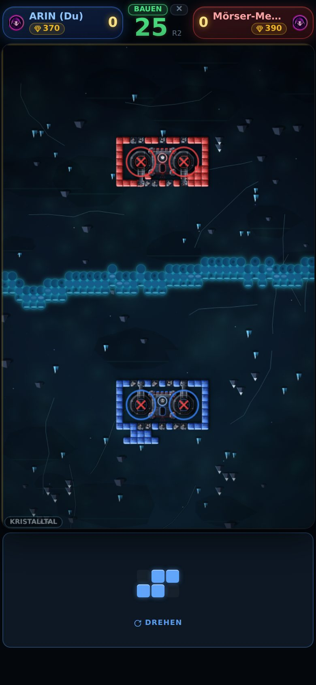
Seven worlds
From Frostreich to Vulkanschlund.
Every match takes place in a different landscape — its own river, its own colours, its own ground. Nobody picks it: the world depends on a number both devices share. You are always in the same one.
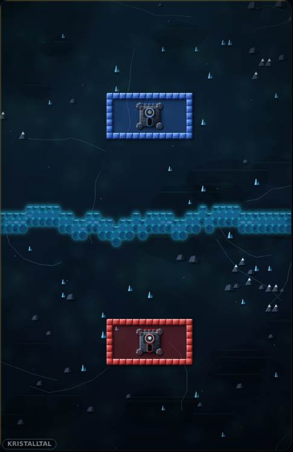
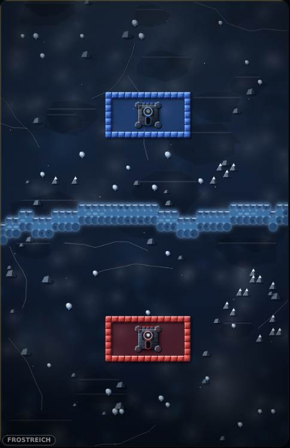
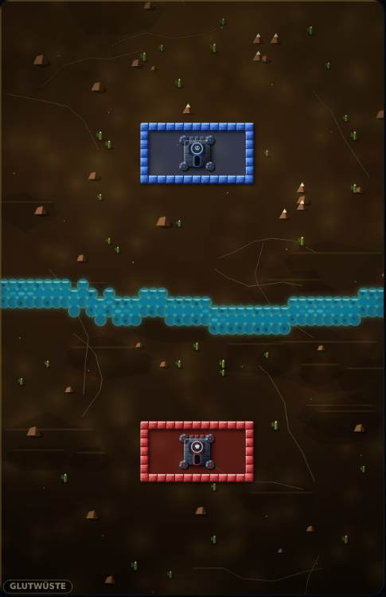
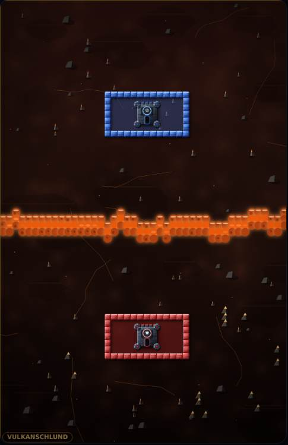
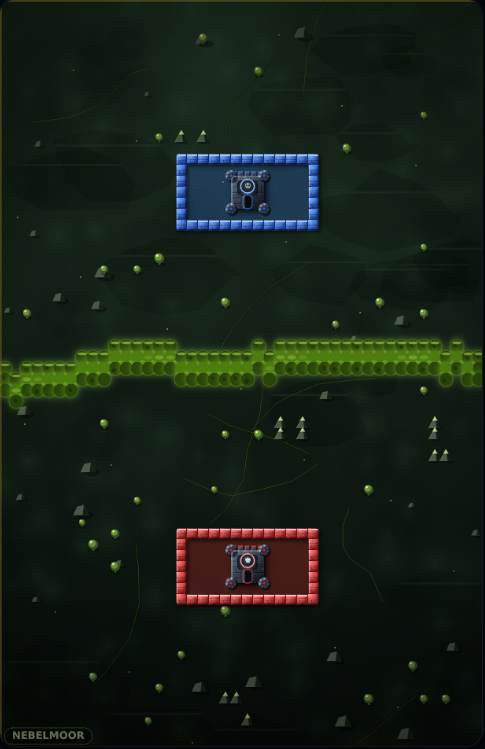
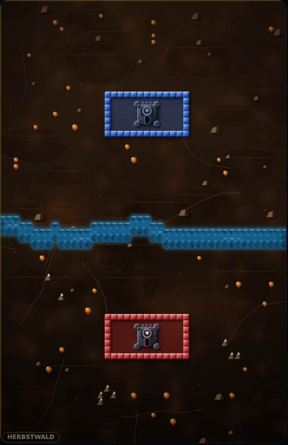
The one rule
Closed means closed.
When the build phase ends, the game lets water run into your field from outside. If it reaches your castle, you are out.
Diagonals count. Two blocks that only touch at a corner stop nothing — and your cannons are not a wall.
Firepower
Two cannons, two intentions.
You earn spoils during the match — for every ball that hits, every round you survive, every enemy cannon you destroy. You can only spend them in the armory phase.
Wall Breaker
Tears holes into the wall. Each additional one costs eighty spoils more than the one before.
200, then +80 per purchaseSlayer
Hits nothing but cannons. Out of reach in round 1: with flawless play you get to 530.
550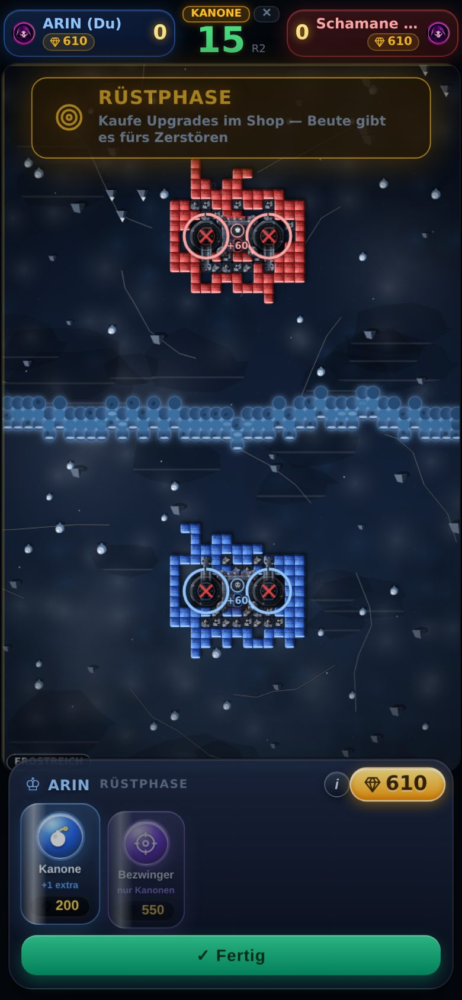
On one device
Put the phone between you.
Everyone plays at the same time, each with their own block. The game knows from where your finger touches whose block it is.
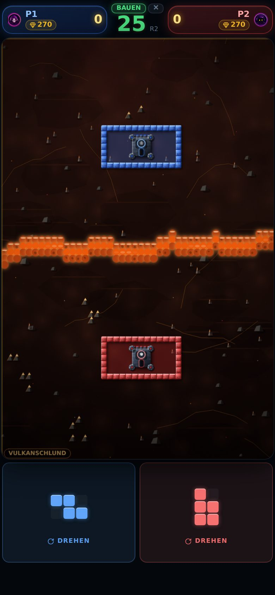
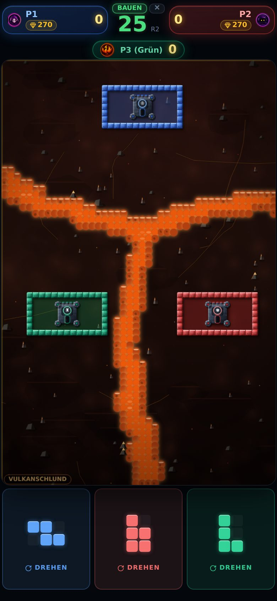
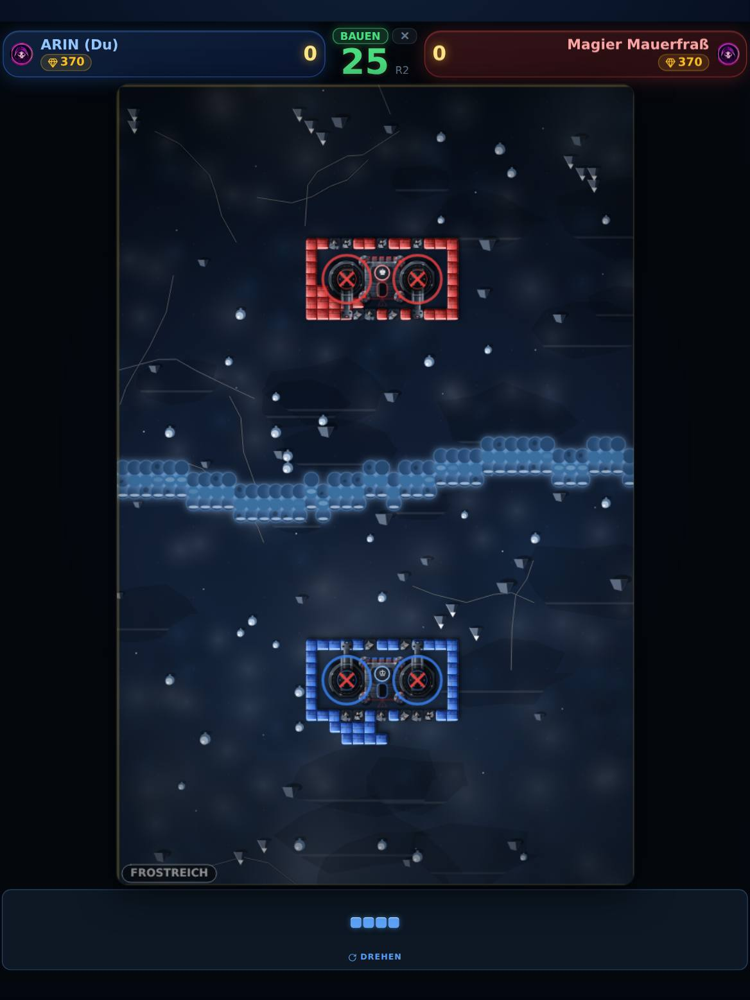
On the iPad
The same game, just bigger.
Portrait — and that is a decision, not an omission. Two people on one device sit at the short edges. In landscape the board would be a narrow strip in the middle, with space left and right that nobody needs.
Header and block bar reach the edges, the board stands between them as large as the height allows. None of it is a stretched phone image.
What else is inside
Four windows that are not on any board.
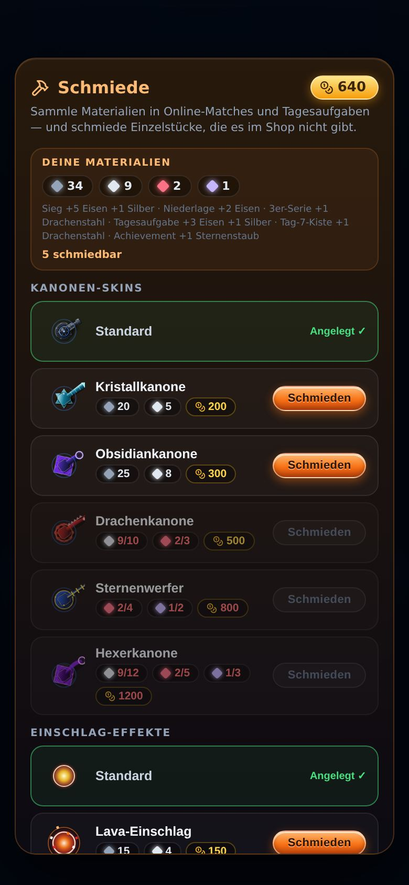
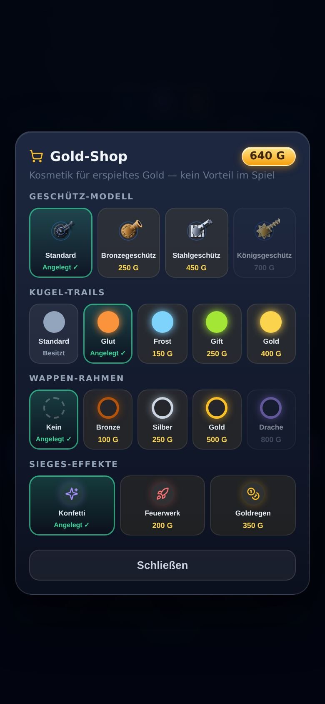
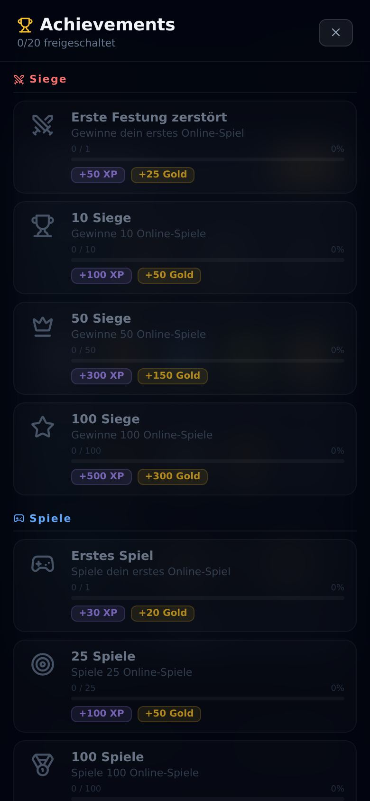
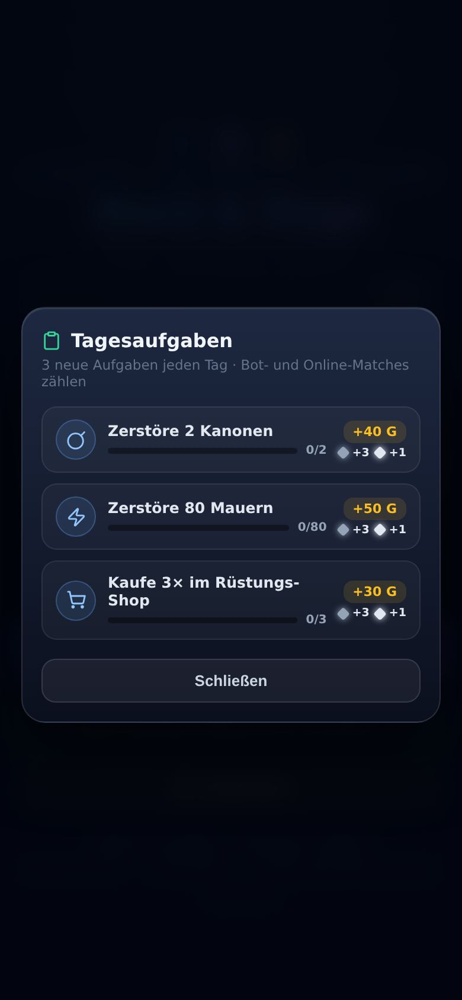
Small rules, big effect
The things you only notice after a few matches.
- Charging upSkip a whole shooting phase and you build up a charge — the next salvo fires more balls accordingly. Holding fire is a real alternative to constant shooting.
- A dying cannon takes walls with itWhen a cannon falls, it blows up the walls in a three-by-three area around it. Put your cannons tight against the wall and you lose both at once.
- No downward spiralWithout a working cannon you get double pay and the next cannon at base price. Otherwise one lost round would end the match.
- Rubble is raw materialShot-down walls stay as rubble. Repair turns it back into walls — and gets more expensive with every purchase.
- Three bot levelsThe easy bot scatters its aim and fires less often. The hard one hits almost exactly and shops like someone who knows what they are doing.
Honestly
What it costs and what it knows about you.
- It costs nothingNo ads, no purchases, no subscription, no energy that has to refill first.
- No pay-to-winGold and cosmetics are a reward for playing. No item raises damage, range or reload time.
- Online needs littleThe name you choose, your progress and your rating. No real name, no email, no advertising ID.
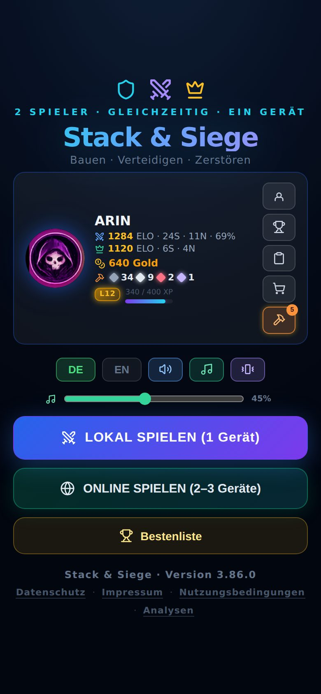
Join in
Into the beta in three steps.
- 1 · Get TestFlightApple's free testing app, from the App Store. All you need is an Apple ID. You don't create an account with me.
- 2 · Open the linktestflight.apple.com/join/hE2AdHwr — on the device you want to play on. You join inside the TestFlight app, not in the browser; read on a computer, the link only brings you back to the same page.
- 3 · Accept, install, playNew builds arrive on their own after that. Each one runs for 90 days, then the next one comes. You can leave any time via "Stop Testing" in TestFlight.
Two castles. One river. One rule.
Join the beta Play now in the browser